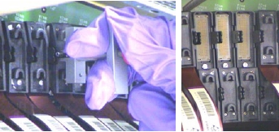

Illustration 2: "B" Row Flex Removal

Disconnect the failing flexes identified in your analysis and each adjacent flex.
Disconnect both inner and outer flexes.
Connect the special flex grounding straps provided in the DAS/Detector Kit shipped with the system.
Illustration 1: "A" Row Flex Removal and Work Clearance

Illustration 2: "B" Row Flex Removal